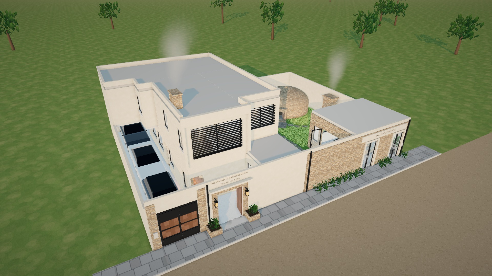
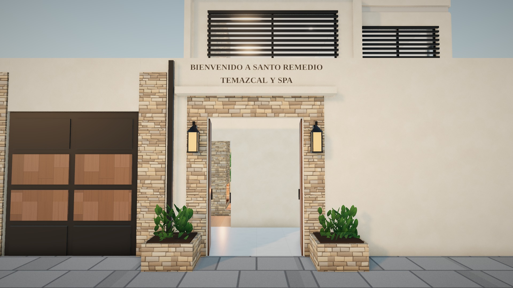
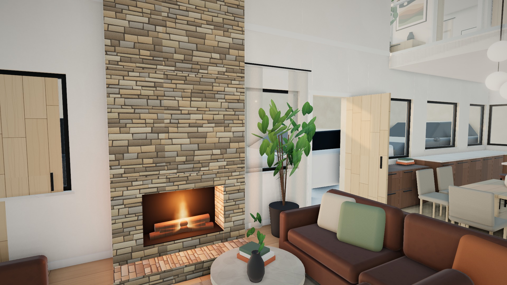
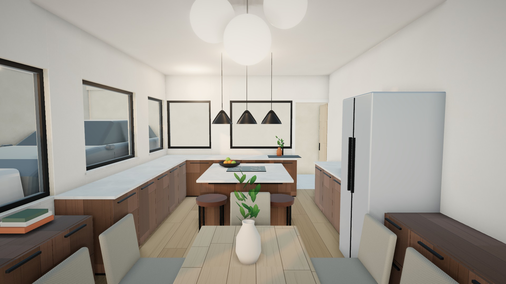
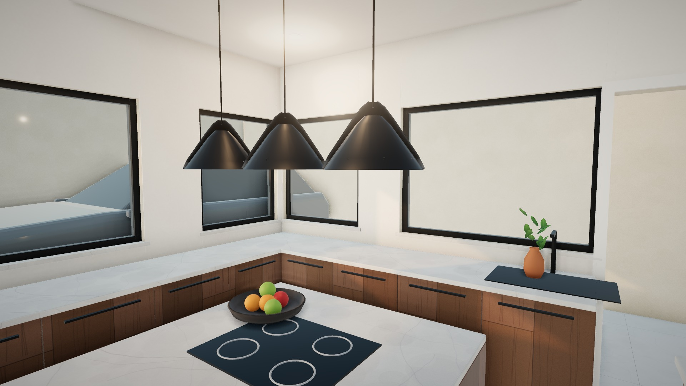
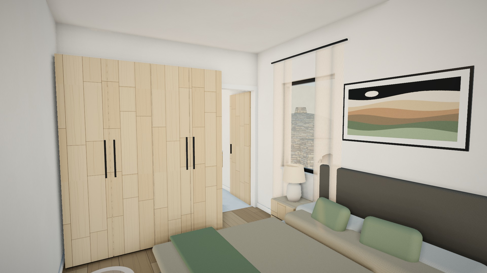
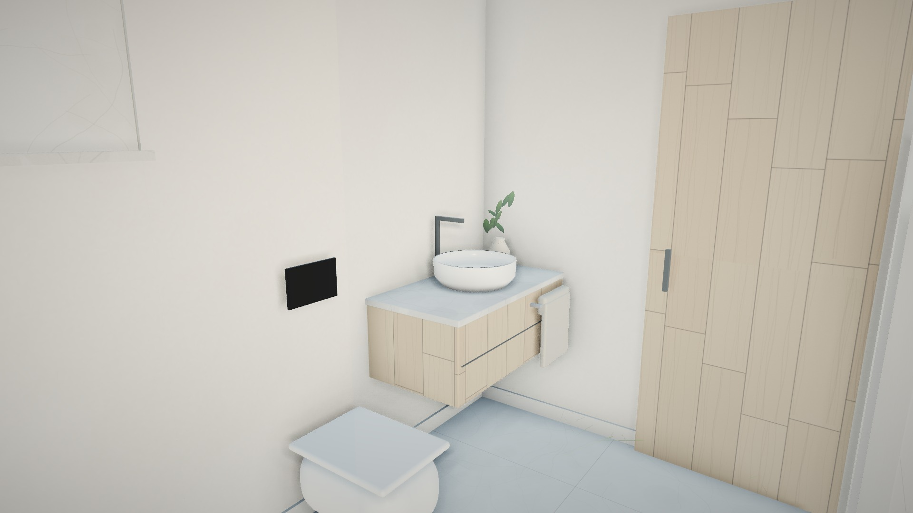
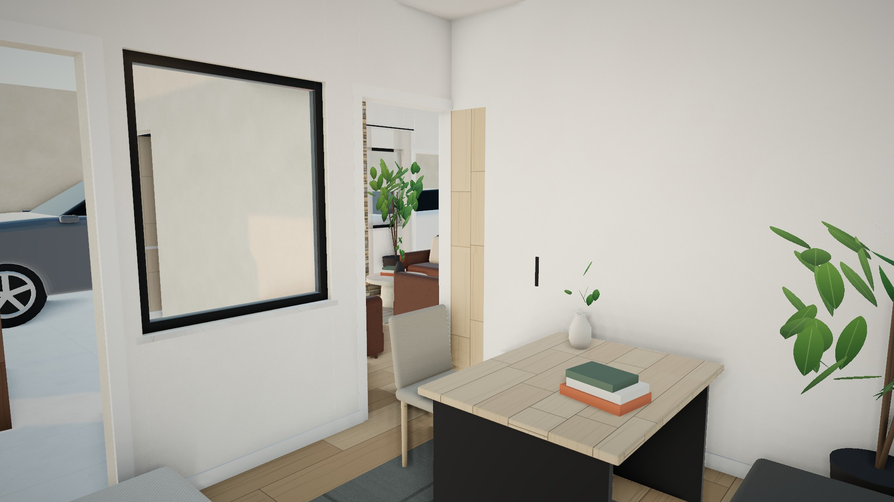

Cada tramo va amarrado a dos fotos del render: una al inicio y otra al final. Así Flow solo anima el camino entre ellas y no puede cambiar el diseño. Al final pones los tramos en orden en la línea de tiempo de Flow y queda un solo video continuo.
Paso 1 · Convertir las 8 fotos en fotos reales
Guarda las 8 fotos: clic derecho → Guardar imagen como…
En Flow, crea una imagen (no video) con cada foto como referencia y este prompt. 1 resultado por foto.
Guarda cada resultado con el mismo nombre más «REAL», por ejemplo 02_sala REAL. Si una foto cambia algo del diseño, repítela antes de seguir.

00_aerea.jpg · Vista aérea

01_entrada.jpg · Entrada principal

02_sala.jpg · Sala con chimenea

03_comedor.jpg · Comedor

04_cocina.jpg · Cocina

05_dormitorio.jpg · Dormitorio

06_bano.jpg · Baño

07_consultorio.jpg · Consultorio
Prompt para cada foto (imagen)
Paso 2 · Tramos de video
Modo «Fotogramas a video», 16:9, 1 salida. Genera el tramo 2A primero y revísalo antes de seguir. Si sale bien, sigue en orden. Los tramos se encadenan: el último fotograma de uno es el primero del siguiente.
Tramo 2A · La manta, el helicóptero y la casa real